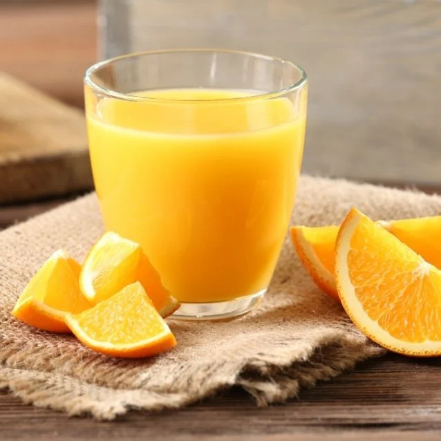
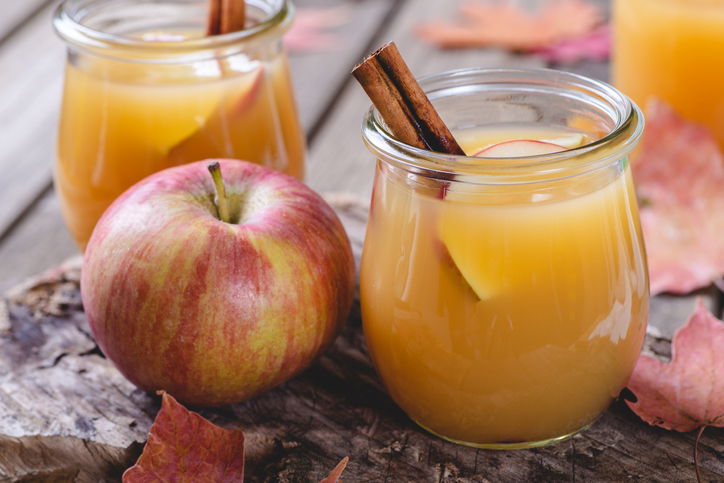

Nuestro Menú
Rico zumo de naranja perfecta para el momento, si tienes sed y quieres algo barato, este jugo es para ti.
El jugo de manzana no es simplemente rico, contiene muchos beneficios para el intestino, para el corazón y previene el cancer, ademas de mantener tu cerebro joven, ¿No son suficientes motivos para querer tomarlo? ¡No te lo pierdas!